2019.09.24 Step-4 StudyThe step-4 is mainly talking about how deal.ii is dealing with problems with different dimensions by its featured dimensionless programming techniques.
We can run the default code and derive the results.
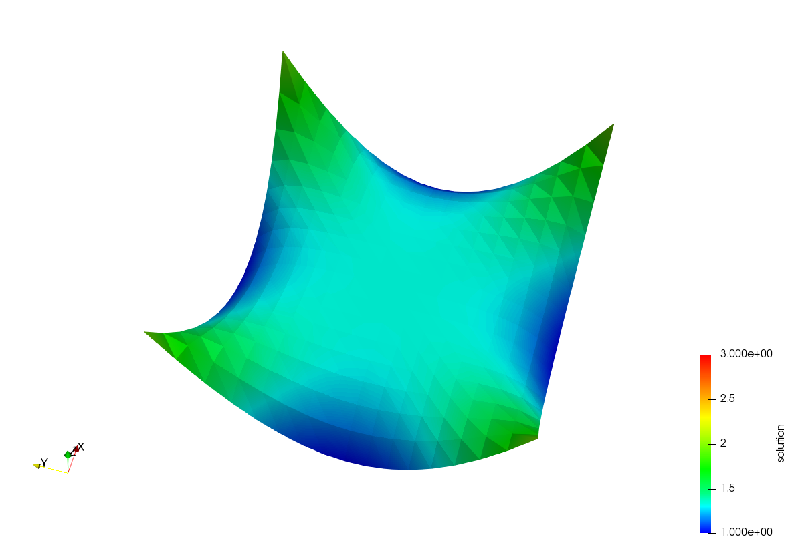
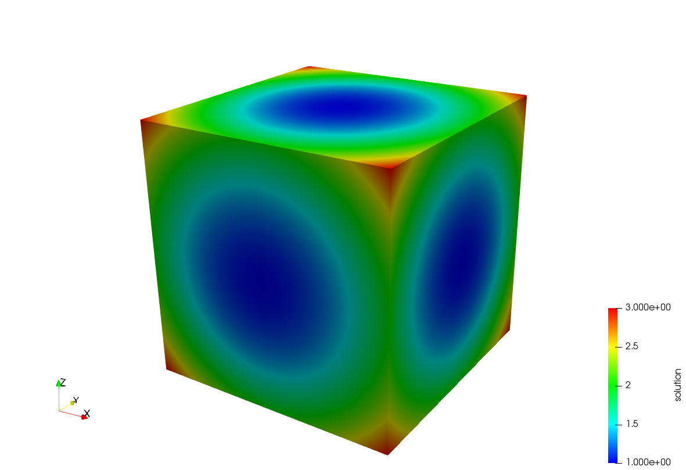
Note: the pictures are generated in ParaView5.5.0. There is a trick to display the 2D results in a kind of 3D surface style. The filter needs to be used is called “Warp By Scalar”.
Nevertheless, for 3D results, the “Warp By Scalar” may not be extremely useful. In this situation, we need to use “Warp By Vector” filter.
First, we need to use “Extract surface” filter, and then “Generate Surface Normals”. Last, use the “Warp By Vector”. As shown in the below figure,
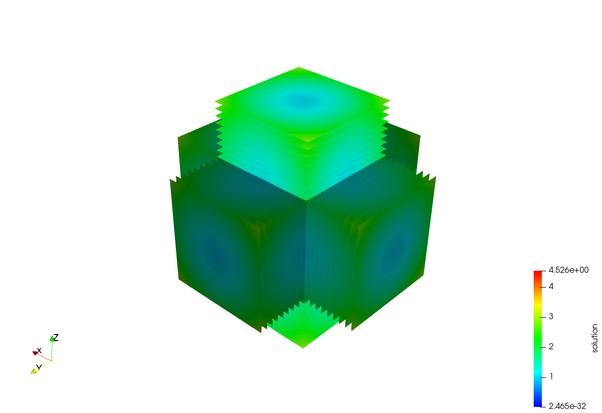
However, we can see there are multiple slices generated around the cube. Why this happened? We clipped the block after the “Extract surface” filter and found that there are many small boxes generated, which are the inner grid being regarded as surfaces too by the “Extract surface” filter.
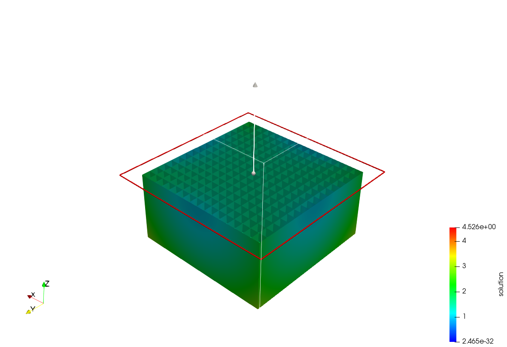
And later each of the slice will be corresponding to a slice shown in previous figure. So now the focus is to remove the inner grid before the “Extract surface” filter and only extract the most exterior sufaces.
Thus, the “Clean To Grid” filter should be used now. After adding it before the “Extract surface”, we can see the small boxes inside the cube have disappeared.
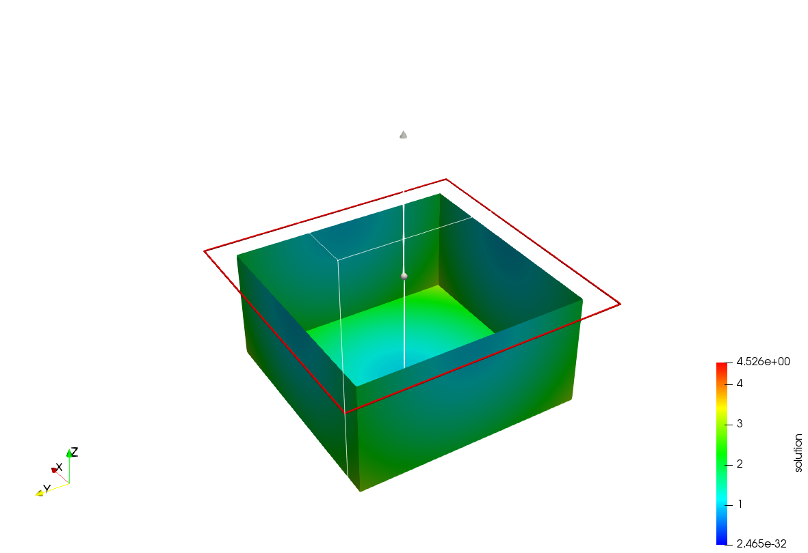
Therefore, the final warped result becomes more reasonable now as shown in the below figure.
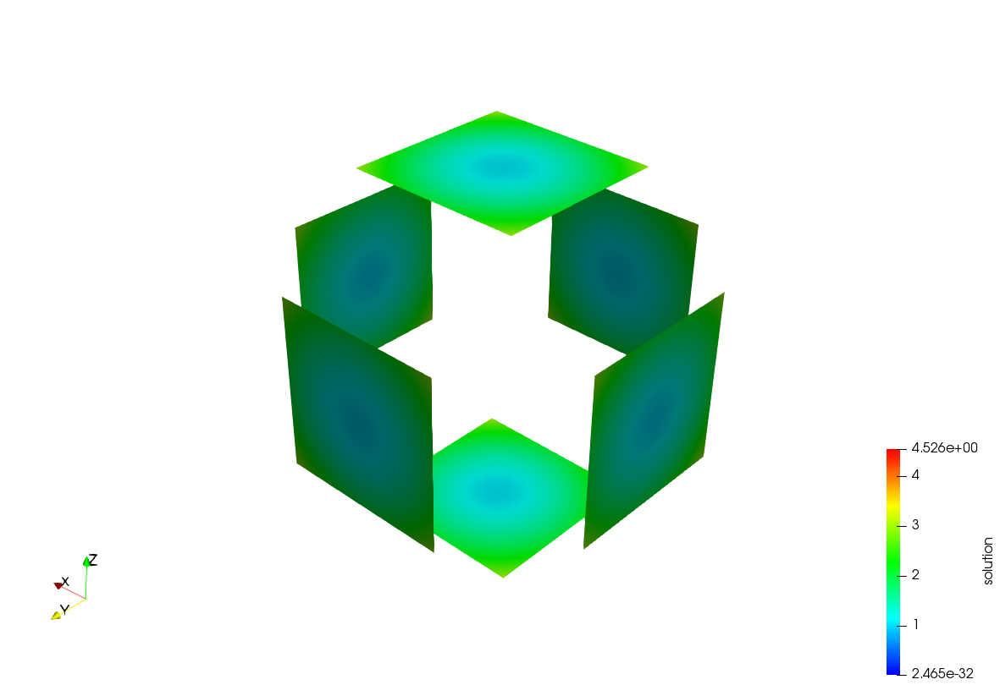
Now I will go through all the possible extensions, which are similar to those in step-3.
- Changing the mesh to hyper shell used previously and L-shape.
1 | template <int dim> |
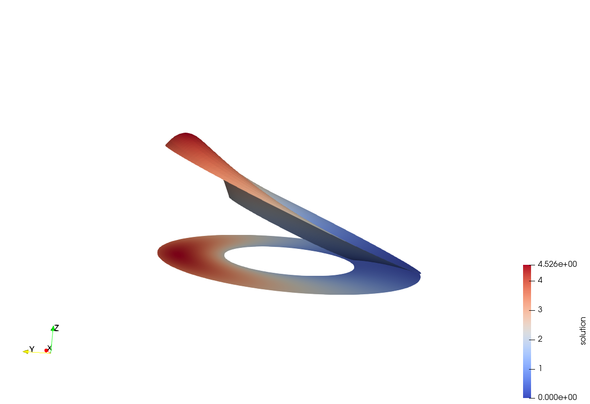

We can see from the result that the problem we raised in the end of step-2 and step-3 hasn’t happened this time because we use refine_global this time.
It looks like that the shell is fixed in the inner sphere because the smaller shell in the middle is the original shell shape, the most outside slice is the one after deformation. The shell is inflatted with the inner sphere fixed during this simulation (compare the previous figure and the following one).
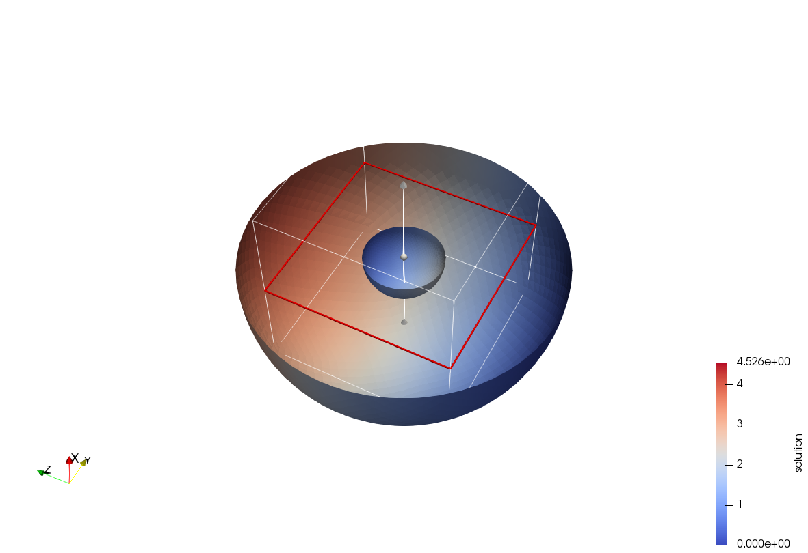
However, I am still not sure about the boundary_values. Further investigation is welcome.
For L-shape
1 | // hyper L shape, added by zzd |

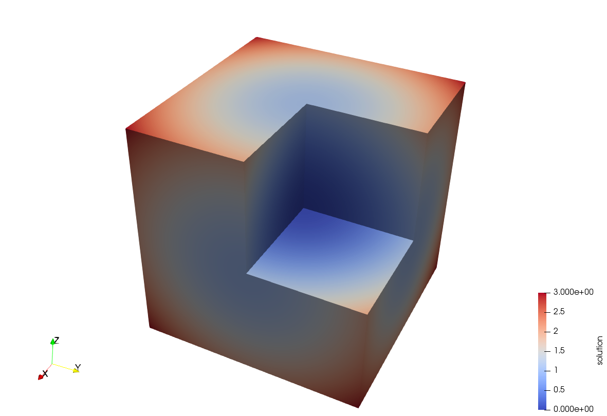
The L-shape looks good here.
- Changing the boundary condition.
1
2
3
4
5
6
7
8
9
10
11
12template <int dim>
void Step4<dim>::make_grid()
{
GridGenerator::hyper_cube(triangulation, -1, 1);
triangulation.begin_active()->face(0)->set_boundary_id(1); // added by zzd
triangulation.refine_global(4);
std::cout << " Number of active cells: " << triangulation.n_active_cells()
<< std::endl
<< " Total number of cells: " << triangulation.n_cells()
<< std::endl;
}

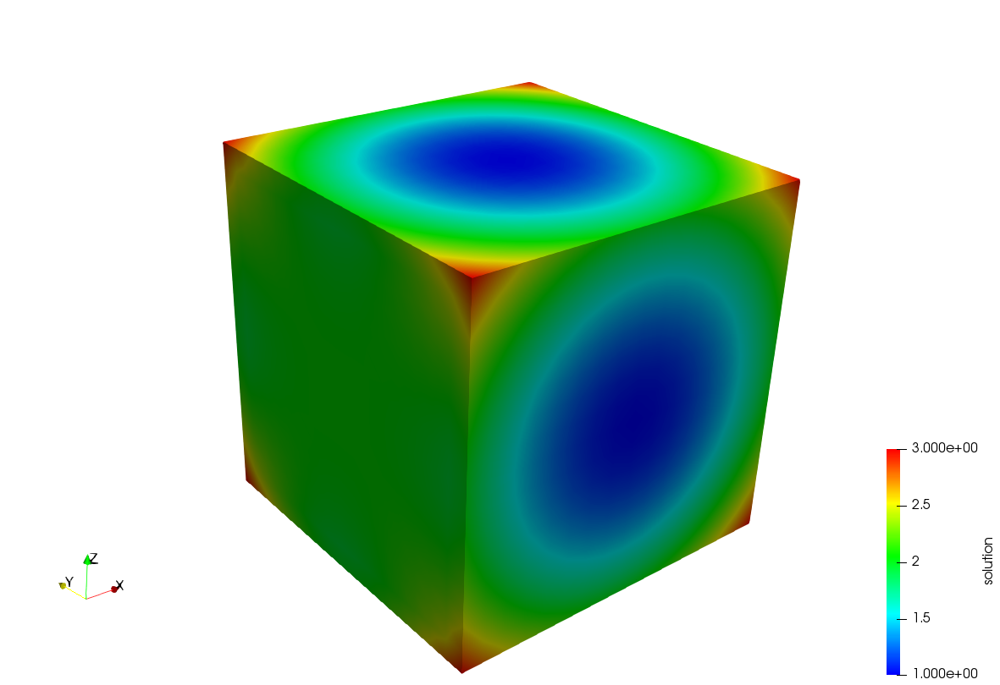
- Modifying the type of the boundary conditions
1
2
3
4
5
6std::map<types::global_dof_index, double> boundary_values;
VectorTools::interpolate_boundary_values(dof_handler,
0,
//BoundaryValues<dim>(),
Functions::ZeroFunction<dim>(), // added by zzd
boundary_values);
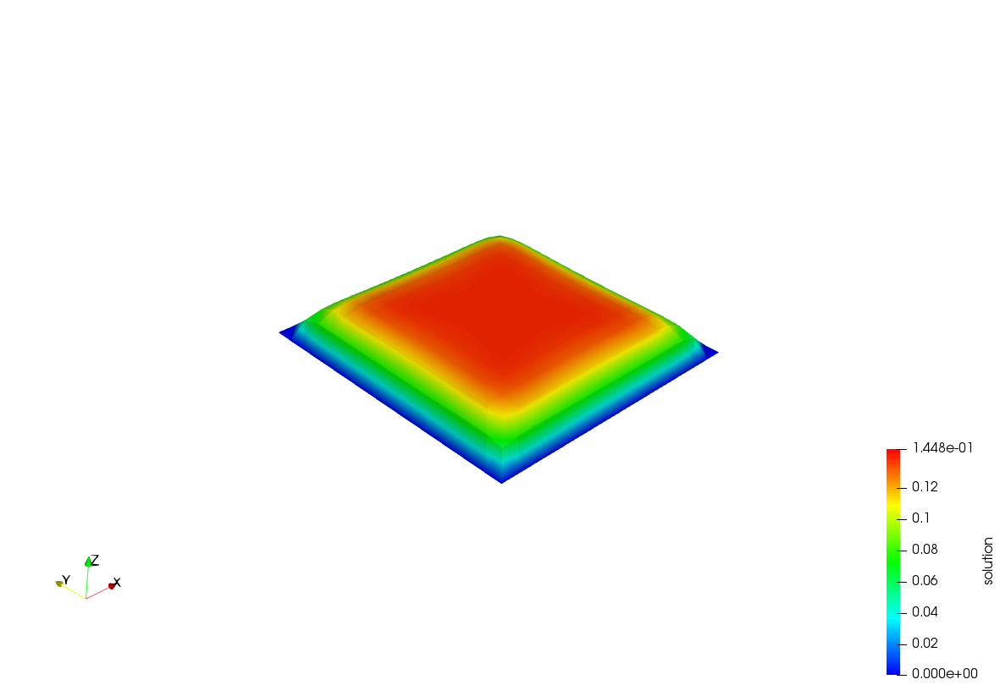
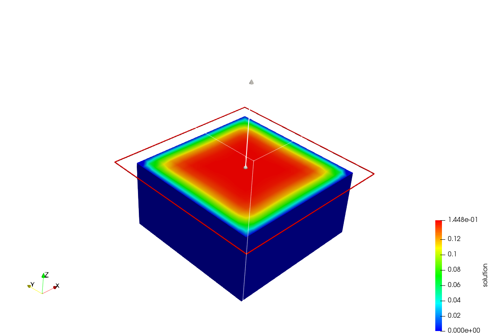
Future work:
The FEM information flow control should recieve more attention, such as how exactly the boundary_values are applied on the final linear equations system.
The “friend” in C++ is still not very clear and should be further studied.
The official tutorial document is as follows,
https://www.dealii.org/current/doxygen/deal.II/step_4.html